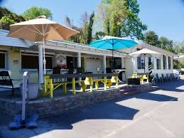
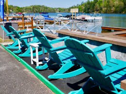

Mara found it first. That is usually how it goes with her. She had been telling me since spring about a place over on Lake Hickory where you can eat with your feet almost in the water and rent a pontoon by the hour.
A couple named Dan and Meagen Kelly bought it a few years back. Left corporate jobs, the whole careful life, and put it all on a marina and a grill at the edge of the water. Caleb read that off my phone on the drive down and went quiet for a minute, which is what he does when something lands a little close to home.
We live on a river. You would think that would be enough water for one family. But the Yadkin behind the house is Caleb's to mow around and mine to sit and watch, and neither of us has ever once thought about putting a boat on it. A lake is a different kind of invitation. A lake you go to on purpose.
So we went. An hour south, give or take, the kids in the back arguing about nothing that mattered, Caleb driving with one arm out the window. Crank stayed home in the shade, which he would have voted for if anyone had asked him.
The pub sits right on the water off Limbaugh Lane. Wood and open air and the smell of a fryer working somewhere behind us. Caleb got a burger, because Caleb gets a burger. I ordered off the specials board without reading the whole thing first, and did not regret it. The kids split a basket and then ate ice cream, which is the honest reason children agree to any of this.

Then the boat. A pontoon, rented by the hour, nothing to bail or patch or apologize for. Caleb stepped on and stood at the wheel looking almost suspicious, the way a man looks at a thing that works when he had nothing to do with fixing it.
That is what I keep coming back to. This is a man who has had a truck in pieces in the garage for five years. He keeps tools he has repaired more times than he has used. And here was a boat that was not his problem, that somebody else would haul out and grease and fret over when we handed the key back at the dock. All he had to do was drive it.
We stayed out past when we meant to. The light went long and gold across the water the way it does in late July, and the kids trailed their hands over the side, and for a while nobody had anywhere else to be.

Ice cream again on the way back in, melting faster than small hands could keep up with. There are worse ways to spend an hour of somebody else's water.
Home before dark. Crank met us in the gravel like we had been gone a year. Caleb said maybe we ought to do that again before summer runs out, which from him is most of the way to a love letter. I think part of him was still turning over the Kellys, and the leap they took, and how the water looked like it had been worth it.